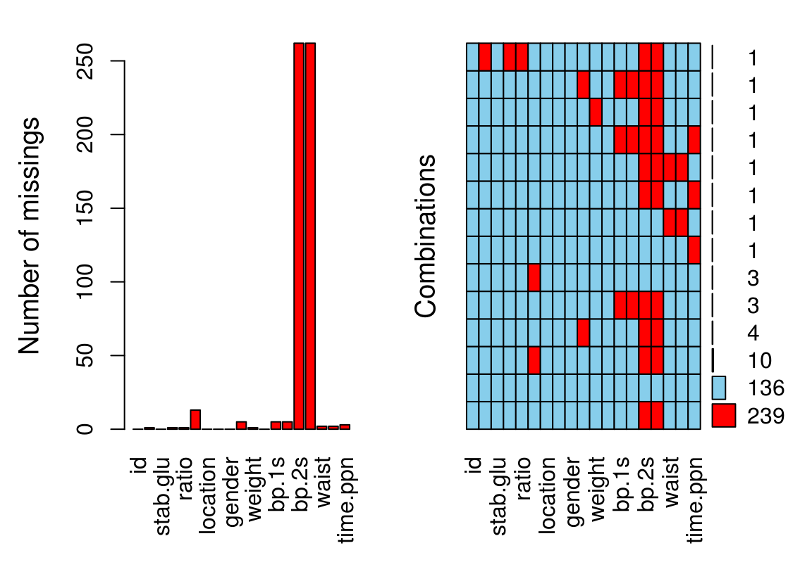

7 Lihtne töö Andmeraamidega
count(iris, Species) #loeb üles, mitu korda igat näitu veerus Species esineb
#> # A tibble: 3 x 2
#> Species n
#> <fct> <int>
#> 1 setosa 50
#> 2 versicolor 50
#> 3 virginica 50
summary(iris)
#> Sepal.Length Sepal.Width Petal.Length
#> Min. :4.30 Min. :2.00 Min. :1.00
#> 1st Qu.:5.10 1st Qu.:2.80 1st Qu.:1.60
#> Median :5.80 Median :3.00 Median :4.35
#> Mean :5.84 Mean :3.06 Mean :3.76
#> 3rd Qu.:6.40 3rd Qu.:3.30 3rd Qu.:5.10
#> Max. :7.90 Max. :4.40 Max. :6.90
#> Petal.Width Species
#> Min. :0.1 setosa :50
#> 1st Qu.:0.3 versicolor:50
#> Median :1.3 virginica :50
#> Mean :1.2
#> 3rd Qu.:1.8
#> Max. :2.5
names(iris) #annab veerunimed
#> [1] "Sepal.Length" "Sepal.Width" "Petal.Length"
#> [4] "Petal.Width" "Species"
nrow(iris) #mitu rida?
#> [1] 150
ncol(iris) #mitu veergu?
#> [1] 5
arrange(iris, desc(Sepal.Length))
#> Sepal.Length Sepal.Width Petal.Length Petal.Width
#> 1 7.9 3.8 6.4 2.0
#> 2 7.7 3.8 6.7 2.2
#> 3 7.7 2.6 6.9 2.3
#> 4 7.7 2.8 6.7 2.0
#> 5 7.7 3.0 6.1 2.3
#> 6 7.6 3.0 6.6 2.1
#> 7 7.4 2.8 6.1 1.9
#> 8 7.3 2.9 6.3 1.8
#> 9 7.2 3.6 6.1 2.5
#> 10 7.2 3.2 6.0 1.8
#> 11 7.2 3.0 5.8 1.6
#> 12 7.1 3.0 5.9 2.1
#> 13 7.0 3.2 4.7 1.4
#> 14 6.9 3.1 4.9 1.5
#> 15 6.9 3.2 5.7 2.3
#> 16 6.9 3.1 5.4 2.1
#> 17 6.9 3.1 5.1 2.3
#> 18 6.8 2.8 4.8 1.4
#> 19 6.8 3.0 5.5 2.1
#> 20 6.8 3.2 5.9 2.3
#> 21 6.7 3.1 4.4 1.4
#> 22 6.7 3.0 5.0 1.7
#> 23 6.7 3.1 4.7 1.5
#> 24 6.7 2.5 5.8 1.8
#> 25 6.7 3.3 5.7 2.1
#> 26 6.7 3.1 5.6 2.4
#> 27 6.7 3.3 5.7 2.5
#> 28 6.7 3.0 5.2 2.3
#> 29 6.6 2.9 4.6 1.3
#> 30 6.6 3.0 4.4 1.4
#> 31 6.5 2.8 4.6 1.5
#> 32 6.5 3.0 5.8 2.2
#> 33 6.5 3.2 5.1 2.0
#> 34 6.5 3.0 5.5 1.8
#> 35 6.5 3.0 5.2 2.0
#> 36 6.4 3.2 4.5 1.5
#> 37 6.4 2.9 4.3 1.3
#> 38 6.4 2.7 5.3 1.9
#> 39 6.4 3.2 5.3 2.3
#> 40 6.4 2.8 5.6 2.1
#> 41 6.4 2.8 5.6 2.2
#> 42 6.4 3.1 5.5 1.8
#> 43 6.3 3.3 4.7 1.6
#> 44 6.3 2.5 4.9 1.5
#> 45 6.3 2.3 4.4 1.3
#> 46 6.3 3.3 6.0 2.5
#> 47 6.3 2.9 5.6 1.8
#> 48 6.3 2.7 4.9 1.8
#> 49 6.3 2.8 5.1 1.5
#> 50 6.3 3.4 5.6 2.4
#> 51 6.3 2.5 5.0 1.9
#> 52 6.2 2.2 4.5 1.5
#> 53 6.2 2.9 4.3 1.3
#> 54 6.2 2.8 4.8 1.8
#> 55 6.2 3.4 5.4 2.3
#> 56 6.1 2.9 4.7 1.4
#> 57 6.1 2.8 4.0 1.3
#> 58 6.1 2.8 4.7 1.2
#> 59 6.1 3.0 4.6 1.4
#> 60 6.1 3.0 4.9 1.8
#> 61 6.1 2.6 5.6 1.4
#> 62 6.0 2.2 4.0 1.0
#> 63 6.0 2.9 4.5 1.5
#> 64 6.0 2.7 5.1 1.6
#> 65 6.0 3.4 4.5 1.6
#> 66 6.0 2.2 5.0 1.5
#> 67 6.0 3.0 4.8 1.8
#> 68 5.9 3.0 4.2 1.5
#> 69 5.9 3.2 4.8 1.8
#> 70 5.9 3.0 5.1 1.8
#> 71 5.8 4.0 1.2 0.2
#> 72 5.8 2.7 4.1 1.0
#> 73 5.8 2.7 3.9 1.2
#> 74 5.8 2.6 4.0 1.2
#> 75 5.8 2.7 5.1 1.9
#> 76 5.8 2.8 5.1 2.4
#> 77 5.8 2.7 5.1 1.9
#> 78 5.7 4.4 1.5 0.4
#> 79 5.7 3.8 1.7 0.3
#> 80 5.7 2.8 4.5 1.3
#> 81 5.7 2.6 3.5 1.0
#> 82 5.7 3.0 4.2 1.2
#> 83 5.7 2.9 4.2 1.3
#> 84 5.7 2.8 4.1 1.3
#> 85 5.7 2.5 5.0 2.0
#> 86 5.6 2.9 3.6 1.3
#> 87 5.6 3.0 4.5 1.5
#> 88 5.6 2.5 3.9 1.1
#> 89 5.6 3.0 4.1 1.3
#> 90 5.6 2.7 4.2 1.3
#> 91 5.6 2.8 4.9 2.0
#> 92 5.5 4.2 1.4 0.2
#> 93 5.5 3.5 1.3 0.2
#> 94 5.5 2.3 4.0 1.3
#> 95 5.5 2.4 3.8 1.1
#> 96 5.5 2.4 3.7 1.0
#> 97 5.5 2.5 4.0 1.3
#> 98 5.5 2.6 4.4 1.2
#> 99 5.4 3.9 1.7 0.4
#> 100 5.4 3.7 1.5 0.2
#> 101 5.4 3.9 1.3 0.4
#> 102 5.4 3.4 1.7 0.2
#> 103 5.4 3.4 1.5 0.4
#> 104 5.4 3.0 4.5 1.5
#> 105 5.3 3.7 1.5 0.2
#> 106 5.2 3.5 1.5 0.2
#> 107 5.2 3.4 1.4 0.2
#> 108 5.2 4.1 1.5 0.1
#> 109 5.2 2.7 3.9 1.4
#> 110 5.1 3.5 1.4 0.2
#> 111 5.1 3.5 1.4 0.3
#> 112 5.1 3.8 1.5 0.3
#> 113 5.1 3.7 1.5 0.4
#> 114 5.1 3.3 1.7 0.5
#> 115 5.1 3.4 1.5 0.2
#> 116 5.1 3.8 1.9 0.4
#> 117 5.1 3.8 1.6 0.2
#> 118 5.1 2.5 3.0 1.1
#> 119 5.0 3.6 1.4 0.2
#> 120 5.0 3.4 1.5 0.2
#> 121 5.0 3.0 1.6 0.2
#> 122 5.0 3.4 1.6 0.4
#> 123 5.0 3.2 1.2 0.2
#> 124 5.0 3.5 1.3 0.3
#> 125 5.0 3.5 1.6 0.6
#> 126 5.0 3.3 1.4 0.2
#> 127 5.0 2.0 3.5 1.0
#> 128 5.0 2.3 3.3 1.0
#> 129 4.9 3.0 1.4 0.2
#> 130 4.9 3.1 1.5 0.1
#> 131 4.9 3.1 1.5 0.2
#> 132 4.9 3.6 1.4 0.1
#> 133 4.9 2.4 3.3 1.0
#> 134 4.9 2.5 4.5 1.7
#> 135 4.8 3.4 1.6 0.2
#> 136 4.8 3.0 1.4 0.1
#> 137 4.8 3.4 1.9 0.2
#> 138 4.8 3.1 1.6 0.2
#> 139 4.8 3.0 1.4 0.3
#> 140 4.7 3.2 1.3 0.2
#> 141 4.7 3.2 1.6 0.2
#> 142 4.6 3.1 1.5 0.2
#> 143 4.6 3.4 1.4 0.3
#> 144 4.6 3.6 1.0 0.2
#> 145 4.6 3.2 1.4 0.2
#> 146 4.5 2.3 1.3 0.3
#> 147 4.4 2.9 1.4 0.2
#> 148 4.4 3.0 1.3 0.2
#> 149 4.4 3.2 1.3 0.2
#> 150 4.3 3.0 1.1 0.1
#> Species
#> 1 virginica
#> 2 virginica
#> 3 virginica
#> 4 virginica
#> 5 virginica
#> 6 virginica
#> 7 virginica
#> 8 virginica
#> 9 virginica
#> 10 virginica
#> 11 virginica
#> 12 virginica
#> 13 versicolor
#> 14 versicolor
#> 15 virginica
#> 16 virginica
#> 17 virginica
#> 18 versicolor
#> 19 virginica
#> 20 virginica
#> 21 versicolor
#> 22 versicolor
#> 23 versicolor
#> 24 virginica
#> 25 virginica
#> 26 virginica
#> 27 virginica
#> 28 virginica
#> 29 versicolor
#> 30 versicolor
#> 31 versicolor
#> 32 virginica
#> 33 virginica
#> 34 virginica
#> 35 virginica
#> 36 versicolor
#> 37 versicolor
#> 38 virginica
#> 39 virginica
#> 40 virginica
#> 41 virginica
#> 42 virginica
#> 43 versicolor
#> 44 versicolor
#> 45 versicolor
#> 46 virginica
#> 47 virginica
#> 48 virginica
#> 49 virginica
#> 50 virginica
#> 51 virginica
#> 52 versicolor
#> 53 versicolor
#> 54 virginica
#> 55 virginica
#> 56 versicolor
#> 57 versicolor
#> 58 versicolor
#> 59 versicolor
#> 60 virginica
#> 61 virginica
#> 62 versicolor
#> 63 versicolor
#> 64 versicolor
#> 65 versicolor
#> 66 virginica
#> 67 virginica
#> 68 versicolor
#> 69 versicolor
#> 70 virginica
#> 71 setosa
#> 72 versicolor
#> 73 versicolor
#> 74 versicolor
#> 75 virginica
#> 76 virginica
#> 77 virginica
#> 78 setosa
#> 79 setosa
#> 80 versicolor
#> 81 versicolor
#> 82 versicolor
#> 83 versicolor
#> 84 versicolor
#> 85 virginica
#> 86 versicolor
#> 87 versicolor
#> 88 versicolor
#> 89 versicolor
#> 90 versicolor
#> 91 virginica
#> 92 setosa
#> 93 setosa
#> 94 versicolor
#> 95 versicolor
#> 96 versicolor
#> 97 versicolor
#> 98 versicolor
#> 99 setosa
#> 100 setosa
#> 101 setosa
#> 102 setosa
#> 103 setosa
#> 104 versicolor
#> 105 setosa
#> 106 setosa
#> 107 setosa
#> 108 setosa
#> 109 versicolor
#> 110 setosa
#> 111 setosa
#> 112 setosa
#> 113 setosa
#> 114 setosa
#> 115 setosa
#> 116 setosa
#> 117 setosa
#> 118 versicolor
#> 119 setosa
#> 120 setosa
#> 121 setosa
#> 122 setosa
#> 123 setosa
#> 124 setosa
#> 125 setosa
#> 126 setosa
#> 127 versicolor
#> 128 versicolor
#> 129 setosa
#> 130 setosa
#> 131 setosa
#> 132 setosa
#> 133 versicolor
#> 134 virginica
#> 135 setosa
#> 136 setosa
#> 137 setosa
#> 138 setosa
#> 139 setosa
#> 140 setosa
#> 141 setosa
#> 142 setosa
#> 143 setosa
#> 144 setosa
#> 145 setosa
#> 146 setosa
#> 147 setosa
#> 148 setosa
#> 149 setosa
#> 150 setosa
#sorteerib tabeli veeru "Sepal.Length" väärtuste järgi
#langevalt (default on tõusev sorteerimine).
#Võib argumendina anda mitu veergu.
top_n(iris, 2, Sepal.Length) #saab 2 rida, milles on kõige suuremad S.L. väärtused
#> Sepal.Length Sepal.Width Petal.Length Petal.Width
#> 1 7.7 3.8 6.7 2.2
#> 2 7.7 2.6 6.9 2.3
#> 3 7.7 2.8 6.7 2.0
#> 4 7.9 3.8 6.4 2.0
#> 5 7.7 3.0 6.1 2.3
#> Species
#> 1 virginica
#> 2 virginica
#> 3 virginica
#> 4 virginica
#> 5 virginica
top_n(iris, -2, Sepal.Length) #saab 2 rida, milles on kõige väiksemad väärtused
#> Sepal.Length Sepal.Width Petal.Length Petal.Width
#> 1 4.4 2.9 1.4 0.2
#> 2 4.3 3.0 1.1 0.1
#> 3 4.4 3.0 1.3 0.2
#> 4 4.4 3.2 1.3 0.2
#> Species
#> 1 setosa
#> 2 setosa
#> 3 setosa
#> 4 setosaTibblega saab teha maatriksarvutusi, kui kasutada ainult arvudega ridu. apply() arvutab maatriksi rea (1) või veeru (2) kaupa, vastavalt funktsioonile, mille sa ette annad.
colSums(fruits[ , 2:3])
#> apples oranges
#> 48 NA
rowSums(fruits[ , 2:3])
#> [1] 3 36 NA
rowMeans(fruits[ , 2:3])
#> [1] 1.5 18.0 NA
colMeans(fruits[ , 2:3])
#> apples oranges
#> 16 NA
fruits_subset <- fruits[ , 2:3]
# 1 tähendab, et arvuta sd rea kaupa
apply(fruits_subset, 1, sd)
#> [1] 0.707 19.799 NA
# 2 tähendab, et arvuta sd veeru kaupa
apply(fruits_subset, 2, sd)
#> apples oranges
#> 23.4 NAAndmetabeli Summary saab mitmel viisil, skimr::skim() funktsioon on üks paremaid
skimr::skim(iris)
#> Skim summary statistics
#> n obs: 150
#> n variables: 5
#>
#> ── Variable type:factor ───────────────────────────────
#> variable missing complete n n_unique
#> Species 0 150 150 3
#> top_counts ordered
#> set: 50, ver: 50, vir: 50, NA: 0 FALSE
#>
#> ── Variable type:numeric ──────────────────────────────
#> variable missing complete n mean sd p0 p25
#> Petal.Length 0 150 150 3.76 1.77 1 1.6
#> Petal.Width 0 150 150 1.2 0.76 0.1 0.3
#> Sepal.Length 0 150 150 5.84 0.83 4.3 5.1
#> Sepal.Width 0 150 150 3.06 0.44 2 2.8
#> p50 p75 p100 hist
#> 4.35 5.1 6.9 ▇▁▁▂▅▅▃▁
#> 1.3 1.8 2.5 ▇▁▁▅▃▃▂▂
#> 5.8 6.4 7.9 ▂▇▅▇▆▅▂▂
#> 3 3.3 4.4 ▁▂▅▇▃▂▁▁Lisame käsitsi tabelile rea:
fruits <- add_row(fruits,
shop = "konsum",
apples = 132,
oranges = -5,
.before = 3)
fruits
#> # A tibble: 4 x 4
#> shop apples oranges vabakava
#> <chr> <dbl> <dbl> <list>
#> 1 maxima 1 2 <chr [26]>
#> 2 tesco 4 32 <dbl [10]>
#> 3 konsum 132 -5 <NULL>
#> 4 lidl 43 NA <S3: lm>Proovi ise:
add_column()Eelnevaid verbe ei kasuta me just sageli, sest tavaliselt loeme andmed sisse väljaspoolt R-i. Aga väga kasulikud on järgmised käsud:
7.0.1 Rekodeerime andmeraami väärtusi
fruits$apples[fruits$apples==43] <- 333
fruits
#> # A tibble: 4 x 4
#> shop apples oranges vabakava
#> <chr> <dbl> <dbl> <list>
#> 1 maxima 1 2 <chr [26]>
#> 2 tesco 4 32 <dbl [10]>
#> 3 konsum 132 -5 <NULL>
#> 4 lidl 333 NA <S3: lm>
fruits$shop[fruits$shop=="tesco"] <- "TESCO"
fruits
#> # A tibble: 4 x 4
#> shop apples oranges vabakava
#> <chr> <dbl> <dbl> <list>
#> 1 maxima 1 2 <chr [26]>
#> 2 TESCO 4 32 <dbl [10]>
#> 3 konsum 132 -5 <NULL>
#> 4 lidl 333 NA <S3: lm>
fruits$apples[fruits$apples>100] <- NA
fruits
#> # A tibble: 4 x 4
#> shop apples oranges vabakava
#> <chr> <dbl> <dbl> <list>
#> 1 maxima 1 2 <chr [26]>
#> 2 TESCO 4 32 <dbl [10]>
#> 3 konsum NA -5 <NULL>
#> 4 lidl NA NA <S3: lm>Viskame välja duplikaatread, aga ainult need kus veerg nimega col1 sisaldab identseid väärtusi (mitmest identse väärtusega reast jääb alles ainult esimene)
distinct(dat, col1, .keep_all = TRUE)
# kõikide col vastu
distinct(dat) Rekodeerime Inf ja NA väärtused nulliks (mis küll tavaliselt on halb mõte):
# inf to 0
x[is.infinite(x)] <- 0
# NA to 0
x[is.na(x)] <- 07.0.2 Ühendame kaks andmeraami rea kaupa
Tabeli veergude arv ei muutu, ridade arv kasvab.
dfs <- tibble(colA = c("a", "b", "c"), colB = c(1, 2, 3))
dfs1 <- tibble(colA = "d", colB = 4)
#id teeb veel ühe veeru, mis näitab, kummast algtabelist iga uue tabeli rida pärit on
bind_rows(dfs, dfs1, .id = "id")
#> # A tibble: 4 x 3
#> id colA colB
#> <chr> <chr> <dbl>
#> 1 1 a 1
#> 2 1 b 2
#> 3 1 c 3
#> 4 2 d 4Vaata Environmentist need tabelid üle ja mõtle järgi, mis juhtus.
Kui bind_rows() miskipärast ei tööta, proovi do.call(rbind, dfs), mis on väga sarnane.
NB! Alati kontrollige, et ühendatud tabel oleks selline, nagu te tahtsite!
Näiteks, võib-olla te tahtsite järgnevat tabelit saada, aga võib-olla ka mitte:
df2 <- tibble(ColC = "d", ColD = 4)
## works by guessing your true intention
bind_rows(dfs1, df2)
#> # A tibble: 2 x 4
#> colA colB ColC ColD
#> <chr> <dbl> <chr> <dbl>
#> 1 d 4 <NA> NA
#> 2 <NA> NA d 47.0.3 ühendame kaks andmeraami veeru kaupa
Meil on 2 verbi: bind_cols ja cbind, millest esimene on konservatiivsem. Proovige eelkõige bind_col-ga läbi saada, aga kui muidu ei saa, siis cbind ühendab vahest asju, mida bind_cols keeldub puutumast. NB! Alati kontrollige, et ühendatud tabel oleks selline, nagu te tahtsite!
dfx <- tibble(colC = c(4, 5, 6))
bind_cols(dfs, dfx)
#> # A tibble: 3 x 3
#> colA colB colC
#> <chr> <dbl> <dbl>
#> 1 a 1 4
#> 2 b 2 5
#> 3 c 3 67.0.4 andmeraamide ühendamine join()-ga
Kõigepealt 2 tabelit: df1 ja df2.
df1 <- tribble(
~ Member, ~ yr_of_birth,
"John Lennon", 1940,
"Paul McCartney", 1942
)
df1
#> # A tibble: 2 x 2
#> Member yr_of_birth
#> <chr> <dbl>
#> 1 John Lennon 1940
#> 2 Paul McCartney 1942df2 <- tribble(
~ Member, ~ instrument, ~ yr_of_birth,
"John Lennon", "guitar", 1940,
"Ringo Starr", "drums", 1940,
"George Harrisson", "guitar", 1942
)
df2
#> # A tibble: 3 x 3
#> Member instrument yr_of_birth
#> <chr> <chr> <dbl>
#> 1 John Lennon guitar 1940
#> 2 Ringo Starr drums 1940
#> 3 George Harrisson guitar 1942Ühendan 2 tabelit nii, et mõlema tabeli kõik read ilmuvad uude tabelisse.
full_join(df1, df2)
#> # A tibble: 4 x 3
#> Member yr_of_birth instrument
#> <chr> <dbl> <chr>
#> 1 John Lennon 1940 guitar
#> 2 Paul McCartney 1942 <NA>
#> 3 Ringo Starr 1940 drums
#> 4 George Harrisson 1942 guitarÜhendan esimese tabeliga df2 nii, et ainult df1 read säilivad, aga df2-lt võetakse sisse veerud, mis df1-s puuduvad. See on hea join, kui on vaja algtabelile lisada infot teistest tabelitest.
left_join(df1, df2)
#> # A tibble: 2 x 3
#> Member yr_of_birth instrument
#> <chr> <dbl> <chr>
#> 1 John Lennon 1940 guitar
#> 2 Paul McCartney 1942 <NA>Filtreerin välja need df1 read, millele vastab rida df2-s.
semi_join(df1, df2)
#> # A tibble: 1 x 2
#> Member yr_of_birth
#> <chr> <dbl>
#> 1 John Lennon 1940Filtreerin välja need df1 read, millele ei vasta rida df2-s.
anti_join(df1, df2)
#> # A tibble: 1 x 2
#> Member yr_of_birth
#> <chr> <dbl>
#> 1 Paul McCartney 19427.0.5 Nii saab raamist kätte vektori, millega tehteid teha.
Tibble jääb muidugi endisel kujul alles.
ubinad <- fruits$apples
ubinad <- ubinad + 2
ubinad
#> [1] 3 6 NA NA
## see on jälle vektor
str(ubinad)
#> num [1:4] 3 6 NA NA7.1 Andmeraamide salvestamine (eksport-import)
Andmeraami saame salvestada näiteks csv-na (comma separated file) oma kõvakettale, kasutame “tidyverse” analooge paketist “readr”, mille nimed on baas R funktsioonidest eristatavad alakriipsu “_" kasutamisega. “readr” laaditakse automaatselt koos “tidyverse” laadimisega.
## loome uuesti fruits data tibble
shop <- c("maxima", "tesco", "lidl")
apples <- c(1, 4, 43)
oranges <- c(2, 32, NA)
fruits <- tibble(shop, apples, oranges, vabakava)
## kirjutame fruits tabeli csv faili fruits.csv kataloogi data
write_csv(fruits, "data/fruits.csv")Kuhu see fail läks? See läks meie projekti juurkataloogi kausta “data/”, juurkataloogi asukoha oma arvuti kõvakettal leiame käsuga:
getwd()
#> [1] "/home/travis/build/rstats-tartu/lectures"Andmete sisselugemine töökataloogist:
fruits <- read_csv("data/fruits.csv")MS exceli failist saab tabeleid importida “readxl” raamatukogu abil.
library(readxl)
## kõigepealt vaatame kui palju sheete failis on
sheets <- excel_sheets("data/excelfile.xlsx")
## siis impordime näiteks esimese sheeti
dfs <- read_excel("data/excelfile.xlsx", sheet = sheets[1])Excelist csv-na eksporditud failid tuleks sisse lugeda käsuga read_csv2 või read.csv2 (need on erinevad funktsioonid; read.csv2 loeb selle sisse data framena ja read_csv2 tibble-na).
R-i saab sisse lugeda palju erinevaid andmeformaate. Näiteks, installi RStudio addin: “Gotta read em all R”, vaata eespool. See läheb ülesse tab-i Addins. Sealt saab selle avada ja selle abil tabeleid oma workspace üles laadida.
Alternatiiv: mine alla paremake Files tab-le, navigeeri sinna kuhu vaja ja kliki faili nimele, mida tahad R-i importida.
Mõlemal juhul ilmub alla konsooli (all vasakul) koodijupp, mille jooksutamine peaks asja ära tegema. Te võite tahta selle koodi kopeerida üles vasakusse aknasse kus teie ülejäänud kood tulevastele põlvedele säilub.
Tüüpiliselt töötate R-s oma algse andmestikuga. Reprodutseeruvaks projektiks on vaja 2 asja: algandmeid ja koodi, millega neid manipuleerida. R ei muuda algandmeid, mille te näiteks csv-na sisse loete.
Andmetabelite salvestamine töö vaheproduktidena ei ole sageli vajalik, sest te jooksutate iga kord, kui te oma projekti juurde naasete, kogu analüüsi uuesti kuni kohani, kuhu te pooleli jäite. See tagab, et teie kood töötab tervikuna. Erandiks on tabelid, mille arvutamine võtab palju aega.
Tibble konverteerimine data frame-ks ja tagasi tibbleks:
class(fruits)
#> [1] "tbl_df" "tbl" "data.frame"
fruits <- as.data.frame(fruits)
class(fruits)
#> [1] "data.frame"
fruits <- as_tibble(fruits)
class(fruits)
#> [1] "tbl_df" "tbl" "data.frame"7.2 NA-d
diabetes <- read.table(file = "data/diabetes.csv", sep = ";", dec = ",", header = TRUE)
str(diabetes)
#> 'data.frame': 403 obs. of 19 variables:
#> $ id : int 1000 1001 1002 1003 1005 1008 1011 1015 1016 1022 ...
#> $ chol : int 203 165 228 78 249 248 195 227 177 263 ...
#> $ stab.glu: int 82 97 92 93 90 94 92 75 87 89 ...
#> $ hdl : int 56 24 37 12 28 69 41 44 49 40 ...
#> $ ratio : num 3.6 6.9 6.2 6.5 8.9 ...
#> $ glyhb : num 4.31 4.44 4.64 4.63 7.72 ...
#> $ location: Factor w/ 2 levels "Buckingham","Louisa": 1 1 1 1 1 1 1 1 1 1 ...
#> $ age : int 46 29 58 67 64 34 30 37 45 55 ...
#> $ gender : Factor w/ 2 levels "female","male": 1 1 1 2 2 2 2 2 2 1 ...
#> $ height : int 62 64 61 67 68 71 69 59 69 63 ...
#> $ weight : int 121 218 256 119 183 190 191 170 166 202 ...
#> $ frame : Factor w/ 4 levels "","large","medium",..: 3 2 2 2 3 2 3 3 2 4 ...
#> $ bp.1s : int 118 112 190 110 138 132 161 NA 160 108 ...
#> $ bp.1d : int 59 68 92 50 80 86 112 NA 80 72 ...
#> $ bp.2s : int NA NA 185 NA NA NA 161 NA 128 NA ...
#> $ bp.2d : int NA NA 92 NA NA NA 112 NA 86 NA ...
#> $ waist : int 29 46 49 33 44 36 46 34 34 45 ...
#> $ hip : int 38 48 57 38 41 42 49 39 40 50 ...
#> $ time.ppn: int 720 360 180 480 300 195 720 1020 300 240 ...
aggr(diabetes, prop = FALSE, numbers = TRUE) Siit on näha, et kui me viskame välja 2 tulpa ja seejärel kõik read, mis sisaldavad NA-sid, kaotame me umbes 20 rida 380-st, mis ei ole suur kaotus.
Siit on näha, et kui me viskame välja 2 tulpa ja seejärel kõik read, mis sisaldavad NA-sid, kaotame me umbes 20 rida 380-st, mis ei ole suur kaotus.
Kui palju ridu, milles on 0 NA-d? Mitu % kõikidest ridadest?
nrows <- nrow(diabetes)
ncomplete <- sum(complete.cases(diabetes))
ncomplete #136
#> [1] 136
ncomplete/nrows #34%
#> [1] 0.3377.2.1 Mitu NA-d on igas tulbas?
sapply(diabetes, function(x) sum(is.na(x)))
#> id chol stab.glu hdl ratio glyhb
#> 0 1 0 1 1 13
#> location age gender height weight frame
#> 0 0 0 5 1 0
#> bp.1s bp.1d bp.2s bp.2d waist hip
#> 5 5 262 262 2 2
#> time.ppn
#> 3alternatiiv tidyverse-st - väljund on uus data frame NA-de arvuga igale algse tabeli veerule
diabetes %>% map_df(~sum(is.na(.))) %>% t()
#> [,1]
#> id 0
#> chol 1
#> stab.glu 0
#> hdl 1
#> ratio 1
#> glyhb 13
#> location 0
#> age 0
#> gender 0
#> height 5
#> weight 1
#> frame 0
#> bp.1s 5
#> bp.1d 5
#> bp.2s 262
#> bp.2d 262
#> waist 2
#> hip 2
#> time.ppn 3Ploti NAd punasega igale tabeli reale ja tulbale mida tumedam halli toon seda suurem number selle tulba kontekstis:
matrixplot(diabetes) 
7.2.2 Kuidas rekodeerida NA-d näiteks 0-ks:
dfs[is.na(dfs)] <- 0
dfs[is.na(dfs)] <- "other"
dfs[dfs == 0] <- NA # teeb vastupidi 0-d NA-deksPane tähele, et NA tähistamine ei käi character vectorina vaid dedikeeritud is.na() funktsiooniga.
coalesce teeb seda peenemalt. kõigepealt kõik
x <- c(1:5, NA, NA, NA)
coalesce(x, 0L)
#> [1] 1 2 3 4 5 0 0 0Nii saab 2 vektori põhjal kolmanda nii, et NA-d asendatakse vastava väärtusega:
y <- c(1, 2, NA, NA, 5)
z <- c(NA, NA, 3, 4, 5)
coalesce(y, z)
#> [1] 1 2 3 4 5filter_all(weather, any_vars(is.na(.))) näitab ridu, mis sisaldavad NA-sid
filter_at(weather, vars(starts_with("wind")), all_vars(is.na(.))) read, kus veerg, mis sisaldab wind, on NA.
7.2.3 Rekodeerime NA-ks
na_if(x, y)
#x - vektor ehk tabeli veerg, mida modifitseerime
#y - väärtus, mida soovime NA-ga asendada
na_if(dfs, "") #teeb dfs tabelis tühjad lahtrid NA-deks
na_if(dfs, "other") #teeb lahtrid, kus on "other" NA-deks
na_if(dfs, 0) #teeb 0-d NA-deks. 7.2.4 drop_na() viskab tabelist välja NA-dega read
drop_na(data, c(column1, column2)) - argument variable võimaldab visata välja read, mis on NA-d ainult kindlates veergudes (column1 ja column2 meie näites - aga ära unusta column1 asemele kirjutada oma veeru nime). Ära unusta ka kasutamast vektori vormi c(), et veerge määrata. column1:column4 vorm töötab samuti ja võtab NAd veergudest 1-4 (kui veeru nr 1 nimi on column1 jne).
7.2.5 viska tabelist välja veerud, milles on liiga palju NA-sid
Meil on lai tabel sadade numbriliste veegudega. Neist paljud on NA-rikkad (andmevaesed) ja tuleks tabelist eemaldada. Aga kuidas seda teha?
Selleks (1) koostame vektori (vekt), milles on tabeli df-i iga numbrilise veeru NA-de suhtarv, (2) viskame sellest vektorist välja nende veergude nimed, milles on liiga palju NA-sid ja (3) subsetime df-i saadud vektori (vekt1) vastu.
NB! vekt ja vekt1 on nn named vektorid, milles vektori iga element (NAde suhtarv mingis tabeli veerus) on seotud selle elemendi nimega, mis on identne selle veeru nimega tabelis df.
vekt <- sapply(df, function(x) mean(is.na(x)))
#NA-de protsent igas veerus
vekt
vekt1 <- nad[nad < 0.8]
#subsettisin vektori elemendid, mis on < 0.8 (NA-sid alla 80%). 216 tk.
#nad1 is a named vector
vekt1n <- names(vekt1) #vektor named vektori vekt1 nimedest
df_with_fewer_cols <- subset(df, select = vekt1n)
#subsetime (jätame alles) ainult need df-i veerud,
#mille nimele vastab mõni vektori nad1n element